Teachers fill in class, subject, date, max marks and syllabus chapters. VidyaNetra ties chapter numbers to the correct textbook for AI-grounded evaluation.
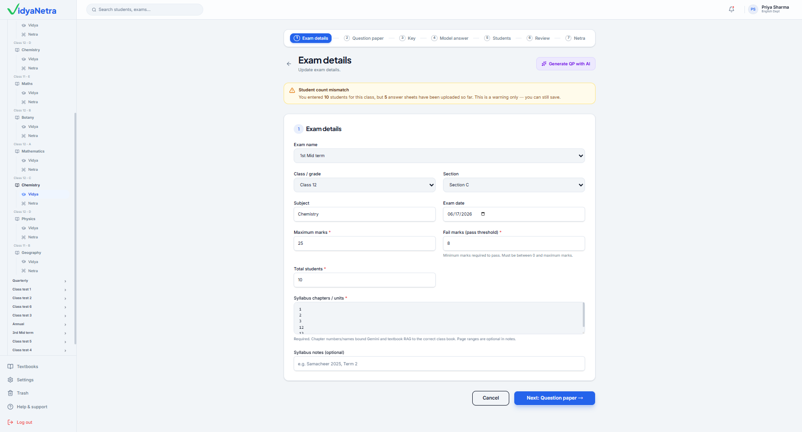
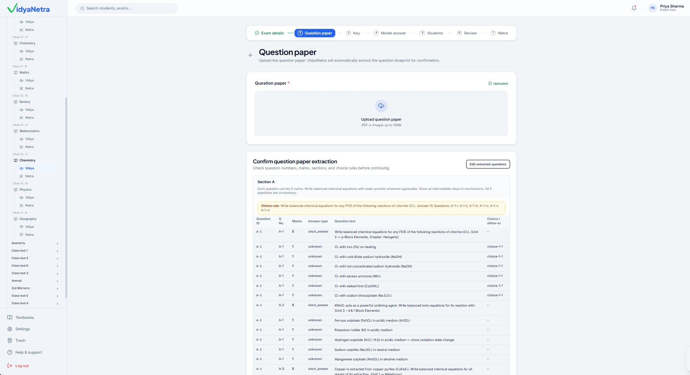
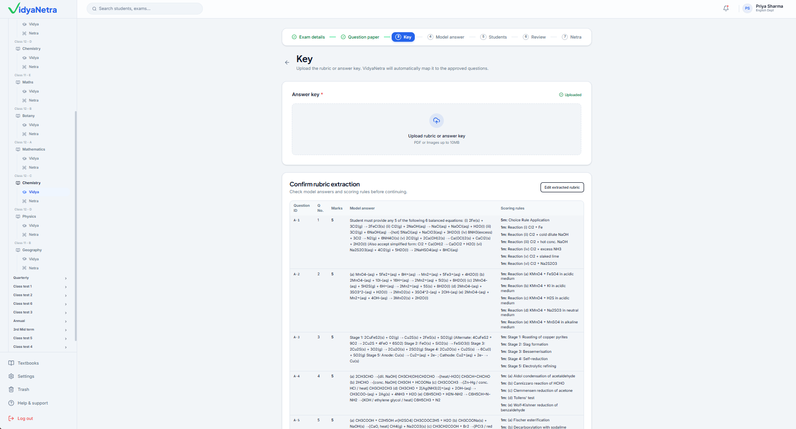
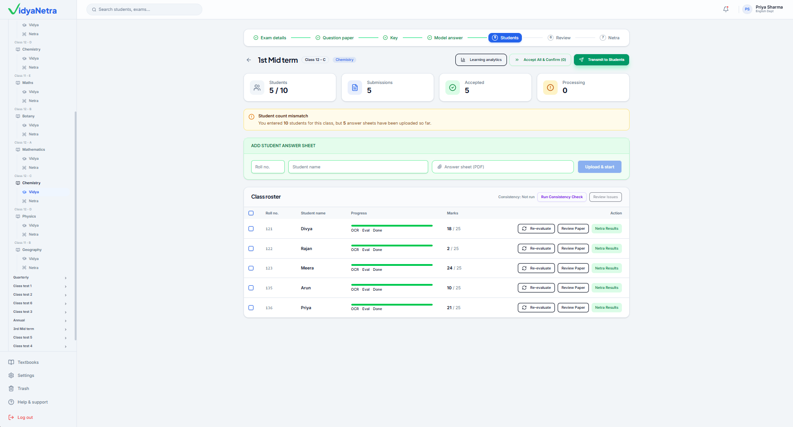
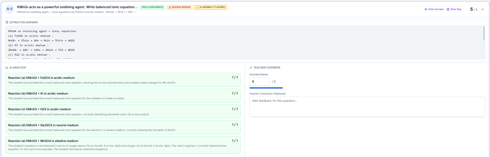
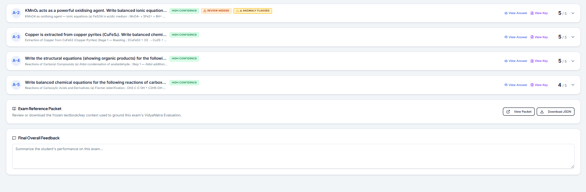
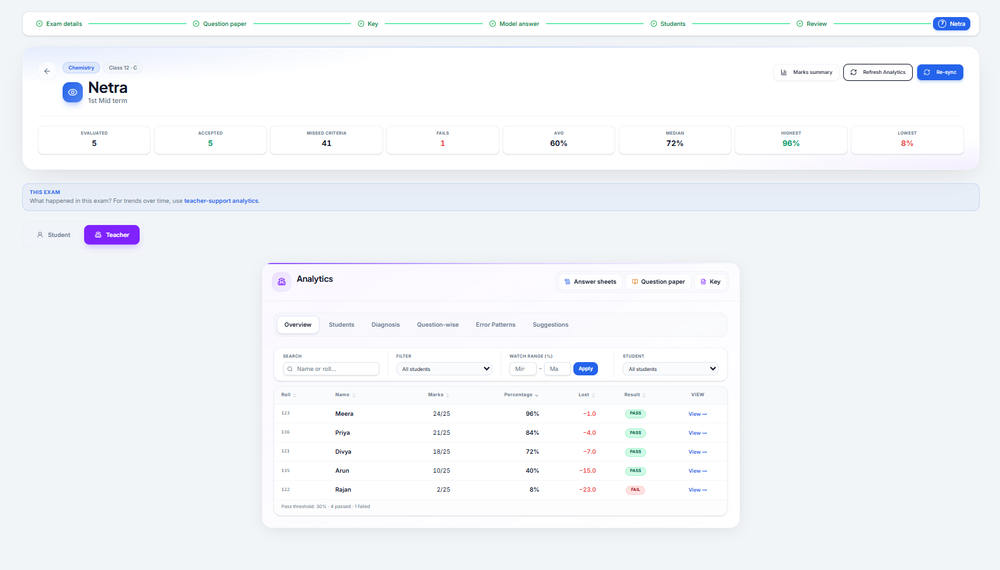
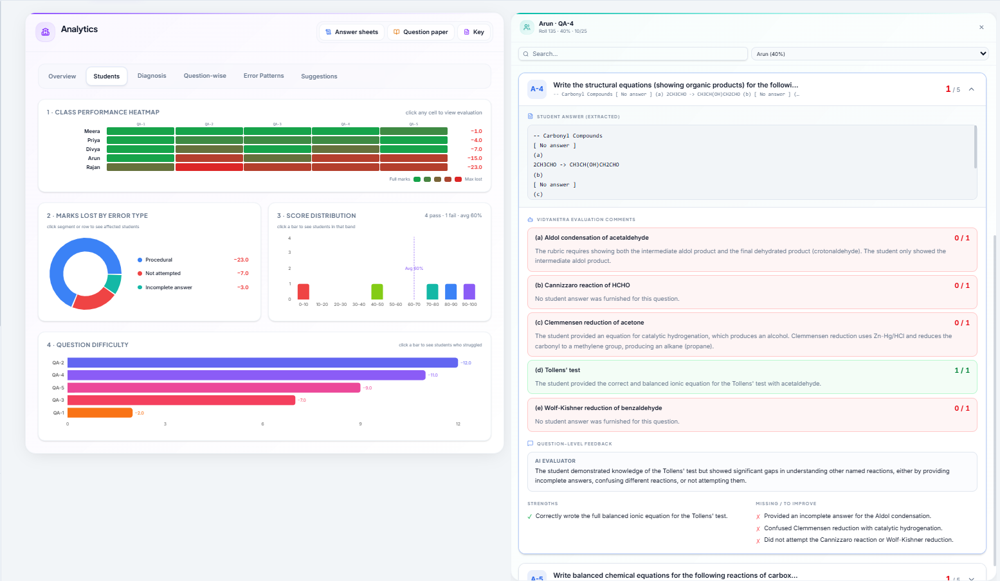
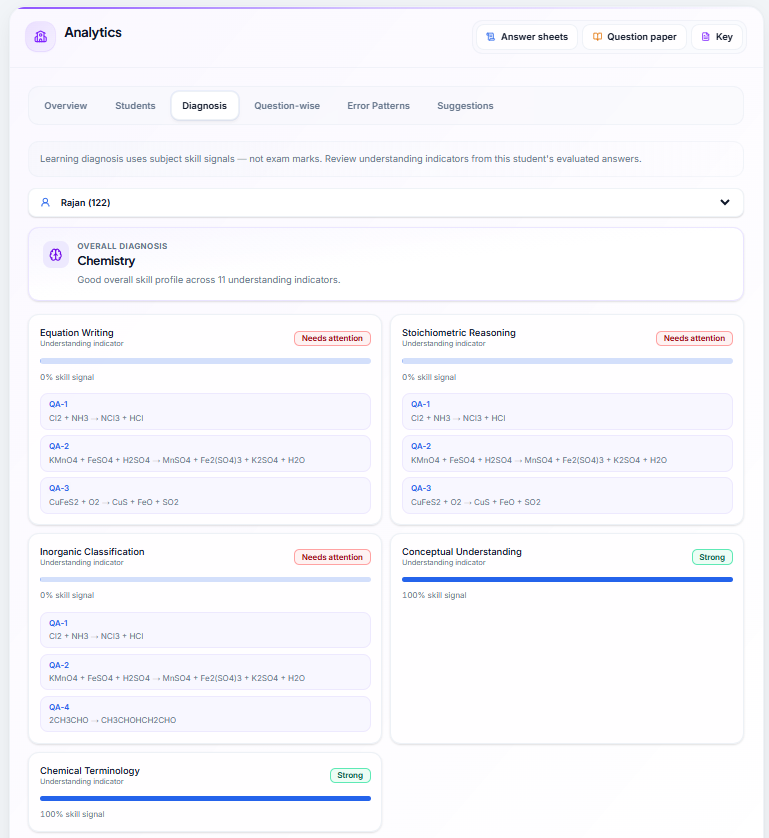
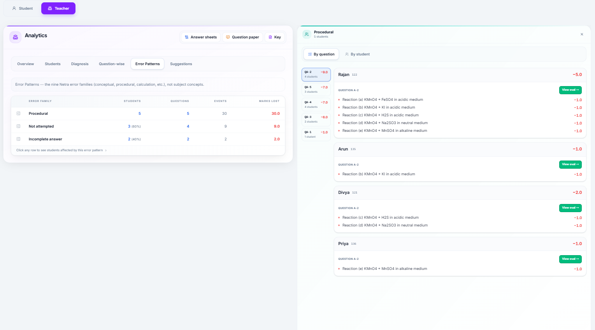
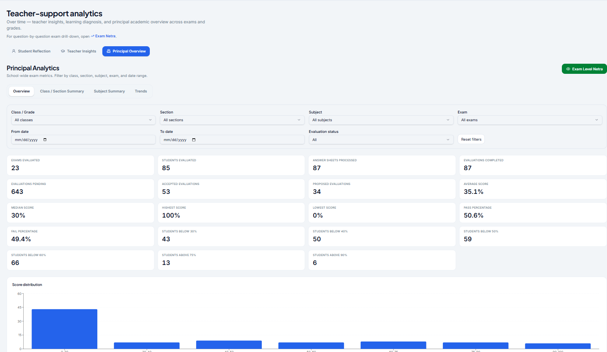
🎓
Ready to try VidyaNetra?
Join our pilot programme — set up in minutes, results in hours. We'll onboard you personally.